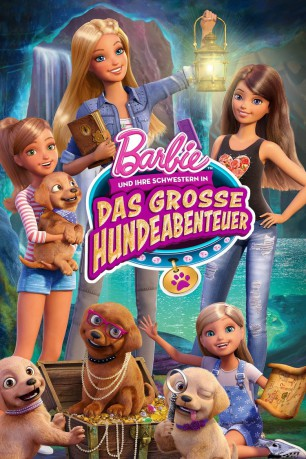

#2944 Barbie 30 und ihre Schwestern in: Das grosse Hundeabenteuer
Alternativ: Barbie & Her Sisters in the Great Puppy Adventure
 
 IMDB-Wertung: 6.4 / 10
IMDB-Wertung: 6.4 / 10  Metascore: 0
Metascore: 0 
Barbie und ihre Schwestern Skipper, Stacie und Chelsea besuchen ihre Großmutter in ihrer Heimatstadt Willows. Begleitet werden die vier von ihren niedlichen Hundewelpen. Als sie eines Tages auf dem Dachboden eine Schatzkarte finden, sind alle ganz aufgeregt. Diese Karte soll sie nämlich zu einem geheimnisvollen und lang verloren geglaubten Schatz irgendwo in der Stadt führen. Mit ihren süßen Hundewelpen im Schlepptau machen sich die Schwestern auf den Weg und erleben jede Menge spannende Abenteuer. Dabei entdecken sie, dass der größte Schatz ihre Geschwisterliebe ist.
Jahr: 2015
Dauer: 68 Minuten
FSK: 0
Land: USA Studio: Universal Studios Home EntertainmentTonspuren:
Untertitel:
Auflösung: 1080p (1920x1080) Größe: 2682 MB
Genre: Abenteuer, Animation/Trick, Familie
Regisseur: Andrew Tan, Michael Goguen
Drehbuch: Amy Wolfram
Soundtrack: Christopher Willis
Darsteller:
- Claire Corlett als Stacie
- Chelsea Miller als Taffy
- Taylor Dianne Robinson als DJ
 Michael Daingerfield als Joe / GPS Voice
Michael Daingerfield als Joe / GPS Voice Sam Vincent als Marty / Willowfest Customer
Sam Vincent als Marty / Willowfest Customer- Morgan Taylor Campbell als Christie
 Brian Dobson als Mayor Jenkins / Jack
Brian Dobson als Mayor Jenkins / Jack Kelly Sheridan als Barbie
Kelly Sheridan als Barbie Kazumi Evans als Skipper / Lady Mistaken for Barbie
Kazumi Evans als Skipper / Lady Mistaken for Barbie- Alyssya Swales als Chelsea
- Bronwen Holmes als Rookie
- Amelia Shoichet-Stoll als Honey
- Joanne Wilson als Grandma Roberts
 Rebecca Shoichet als Tiffany
Rebecca Shoichet als Tiffany- Joanne Wilson als Grandma Roberts
Datei: X:\Kinder Collections\Barbie\Barbie 30 und ihre Schwestern in Das grosse Hundeabenteuer (2015, FSK0, 1920x1080).mkv seit 03.01.2016
Festplatte: Kinder-Filme+Trick
 Es gibt insgesamt 40 Filme in der Gruppe 'Kinder Collections\Barbie'
Es gibt insgesamt 40 Filme in der Gruppe 'Kinder Collections\Barbie'